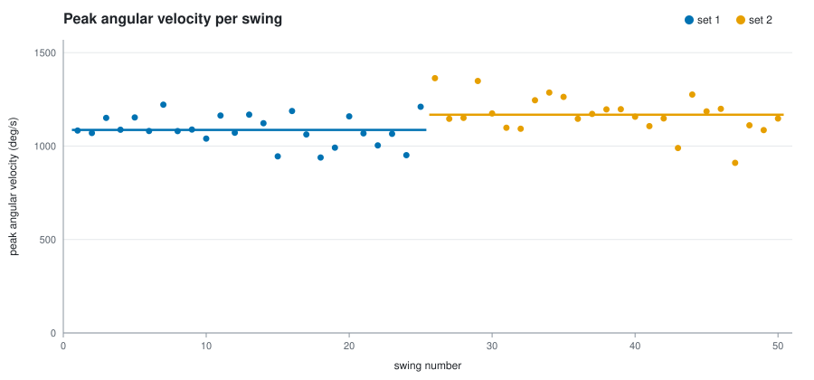
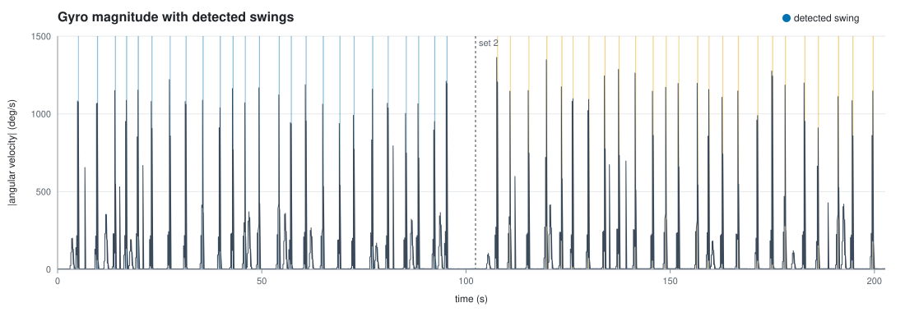

Session summary =============== Swings: 50 over 3.2 min Peak ang. vel.: mean 1127 dps, median 1146, range 910-1363 Consistency (CV): 8.7% (lower = more consistent) Trend: +1.2% per 10 swings Rotation axes: +Z x37, -Z x13 Per set ------- set swings mean dps sd CV % dur ms per min 1 25 1086 80 7.3 246 16.0 2 25 1168 100 8.5 247 15.7 Set-to-set change in mean peak angular velocity ----------------------------------------------- set 1 -> set 2: +7.5% (95% CI +2.9% to +12.1%, a real change)

